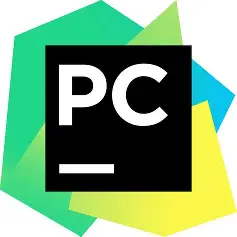
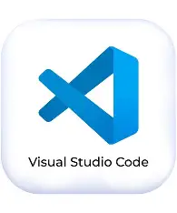
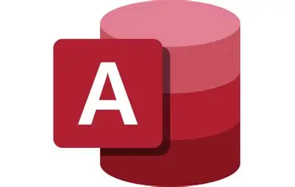

As a first-year college student, here are the applications I learn and use.

Python IDE for Professional Developers.
I use this because our teacher introduced it for Python programming. It is very comfortable to use, especially when running and testing my code.
Comprehensive IDE by Microsoft.
We use this for larger projects since it was recommended and taught by our professor. It has a great interface that is easy to understand, making it comfortable to work with.

Lightweight Source Code Editor.
This is my favorite tool for web development (HTML/CSS). It was introduced in class and is incredibly comfortable to use, thanks to extensions that speed up my coding.

Database Management Systems.
I use this to manage data. It was taught in our database subject, and I found it very easy and comfortable to use for creating and running queries.
Version Control & Collaboration.
Our teacher taught us to use this to save and track our project files. It is a massive help and comfortable to use, ensuring my code is safe and organized.
As a first-year college student, I am continuously learning to explore more languages and applications. I am hoping to master these tools and use them to build innovative, real-world solutions as I grow in my IT journey.